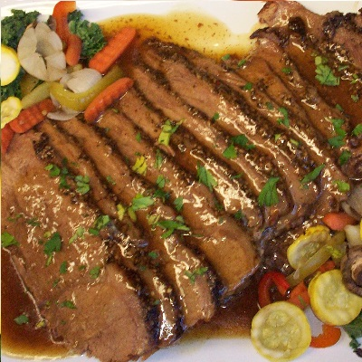

¿Qué es Platos Caseros?
Platos Caseros, a parte de ser un proyecto, es una muy pequeña idea que he querido plasmar para crear una web sencilla de navegar, agradable de visualizar y con la posibilidad de en un futuro modificar o intercambiar los platos a mostrar de una manera rápida y sin complicaciones.

Cambios en la página
No se trata de un proyecto cerrado, ya que la idea es que con relativa facilidad, se puedan añadir o rotar los platos con un cambio del archivo xml, sin la necesidad de modificar absolutamente nada de ningún otro archivo. Así por ejemplo, para alguien que no tenga ningún conocimiento de html, css o javascript, se le podría suministrar diferentes xml para que los pueda intercambiar y producirse los cambios en la web.